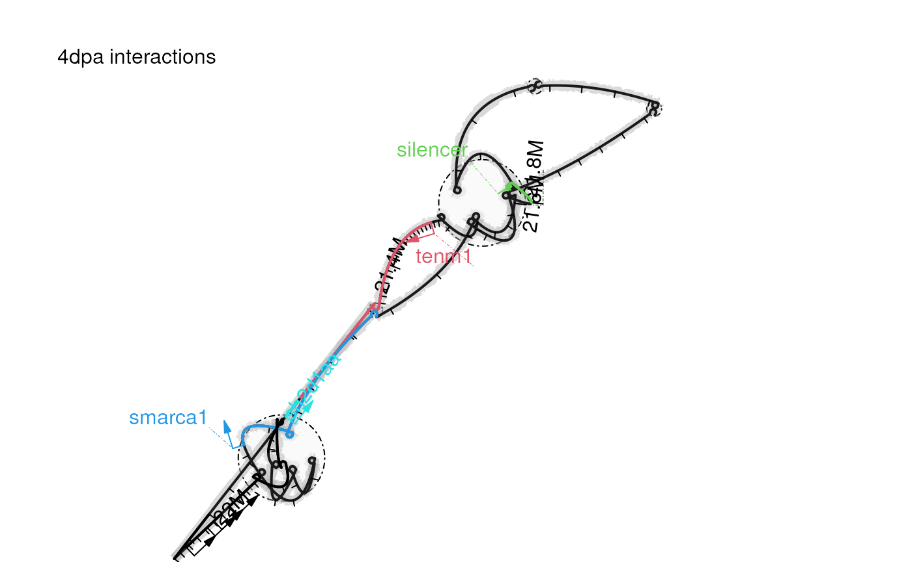

The loopBouquetPlot is a new method introduced by
trackViewer package to visualize genomic interactions
along with annotation for NGS dataset such as HiC, HiChIP, PLAC-seq,
ChIA-PET, and HiCAR data.
The Fig 1 is the showcase for the loopBouquetPlot
compared to the heatmaps and links plot. Additional showcase are
available at loopBouquetPlot for
Brain Comparative Epigenome. There are several steps to repeat the
loopBouquetPlot:
Prepare the annotations
Import the called interactions
Import the ATAC-seq signals if available
Plot the data by loopBouquetPlot function.
library(trackViewer)
library(InteractionSet)
library(org.Dr.eg.db)
library(GenomicFeatures)
library(GenomeInfoDb)
library(GenomicRanges)
library(RMariaDB)
library(ChIPpeakAnno)
library(grid)
## prepare the TxDb object,
## or load the refseq gene annotation by library(TxDb.Drerio.UCSC.danRer11.refGene)
txdb <- GenomicFeatures::makeTxDbFromEnsembl(release=109,
organism='Danio rerio')
## set the silencer coordinates
silencer <- GRanges("chr5", IRanges(21795000, 21800000))
## set data range
range <- GRanges("chr5", IRanges(21100000, 22100000))
## set the plot range
fig1PlotRange <- GRanges('chr5', IRanges(21300000, 2.2e+07))
## prepare gene annotation
genes <- GenomicFeatures::genes(txdb)
GenomeInfoDb::seqlevelsStyle(genes) <- "UCSC"
genes <- subsetByOverlaps(genes, range, ignore.strand=TRUE)
id <- genes$gene_id
eid <- ChIPpeakAnno::xget(id, org.Dr.egENSEMBL2EG, output = "first")
symbol <- id
symbol[!is.na(eid)] <- ChIPpeakAnno::xget(eid[!is.na(eid)],
org.Dr.egSYMBOL,
output = "first")
names(symbol) <- id
feature.gr <- subsetByOverlaps(genes, range, ignore.strand=TRUE)
feature.gr$label <- symbol[feature.gr$gene_id]
# remove genes without symbols to clean the plot
feature.gr <- feature.gr[!grepl('ENSDARG', feature.gr$label)]
## show selected gene symbols only
feature.gr$label[!feature.gr$label %in% c('tenm1', 'smarca1', 'sh2d1aa')] <- ''
feature.gr$type <- 'gene'
feature.gr$col <- 1 # set black color to uninterested genes
feature.gr$col[feature.gr$label %in% c('tenm1', 'smarca1', 'sh2d1aa')] <-
c(2, 4, 5) ## set the colors for the given genes
silencer$label <- 'silencer'
silencer$type <- 'cRE' ## cis regulatory element
silencer$col <- 3 ## set the color to green
feature.gr <- c(feature.gr, silencer)loopBouquetPlot
## set the data folder, all data are available in the extdata folder of this package
extdata <- system.file('extdata', package='loopBouquetPlotDocumentation')
## list all interaction BEDPE files
(interactions <- dir(extdata,
"10k.2.sig3Dinteractions.bedpe",
full.names = TRUE))## [1] "/tmp/RtmpuJW8D5/temp_libpath3d6385c5b0c/loopBouquetPlotDocumentation/extdata/0dpa.10k.2.sig3Dinteractions.bedpe"
## [2] "/tmp/RtmpuJW8D5/temp_libpath3d6385c5b0c/loopBouquetPlotDocumentation/extdata/4dpa.10k.2.sig3Dinteractions.bedpe"
## import the loop for `loopBouquetPlot`
loops_loopBouquet <- lapply(interactions, function(.ele){
## read bedpe as text file
.loop <- read.delim(.ele, header = FALSE)
## create GInteractions object
.loop <- with(.loop, InteractionSet::GInteractions(
## narrow the interaction region for better visualization effect
GRanges(V1, IRanges(V2+2501, V3-2500)),
GRanges(V4, IRanges(V5+2501, V6-2500)),
## set the score to log2 value to decrease the difference of signals
score = log2(V8)
))
## subset the data with given range
.loop <- subsetByOverlaps(.loop, range)
## remove the interchromosal interactions
.loop <- .loop[seqnames(first(.loop))==seqnames(range)[1] &
seqnames(second(.loop))==seqnames(range)[1]]
})
## create names for the data for each sample
(names(loops_loopBouquet) <- sub(".10k.*$", " interactions",
basename(interactions)))## [1] "0dpa interactions" "4dpa interactions"
## list all teh ATAC-seq bigwig files
(bws <- dir(extdata,
"bigWig",
full.names = TRUE))## [1] "/tmp/RtmpuJW8D5/temp_libpath3d6385c5b0c/loopBouquetPlotDocumentation/extdata/0dpa.bigWig"
## [2] "/tmp/RtmpuJW8D5/temp_libpath3d6385c5b0c/loopBouquetPlotDocumentation/extdata/4dpa.bigWig"
## import the ATAC-seq signales
## the ATAC-seq signals are HiCAR R2 read coverage
bwsigs <- lapply(bws, trackViewer::importScore, format="BigWig", ranges=range)
## create names for the data for each sample
(names(bwsigs) <-sub('.bigWig', ' ATAC-seq', basename(bws)))## [1] "0dpa ATAC-seq" "4dpa ATAC-seq"loopBouquetPlot for subfigure
b and c
set.seed(1) ## set seed to control the plot layout
for(i in seq_along(loops_loopBouquet)){
## pdf(paste0(names(loops_loopBouquet)[i], '.pdf')) # if using terminal
trackViewer::loopBouquetPlot(loops_loopBouquet[[i]],
fig1PlotRange,
feature.gr,
atacSig=bwsigs[[i]],
lwd.backbone=2,
col.backbone='gray',
col.backbone_background = 'gray70',
lwd.gene = 2,
show_coor = TRUE,
coor_tick_unit = 1e4,
coor_mark_interval=2e5,
length.arrow=0.1,
show_edges = FALSE)
grid::grid.text(label=names(loops_loopBouquet)[i],
x=.15, y=.9)
## dev.off() # if using terminal
}
There are several steps to repeat the heatmaps and links plot:
Prepare the annotations
Import the ATAC-seq signals
Import the called interactions for link tracks
Import the interactions for heatmap tracks
Plot the data by viewTracks function.
## import the interactions as 'track' objects
loops <- lapply(interactions, function(.ele){
.loop <- read.delim(.ele, header = FALSE)
.loop <- with(.loop, GInteractions(
GRanges(V1, IRanges(V2+2501, V3-2500)),
GRanges(V4, IRanges(V5+2501, V6-2500)),
score = log2(V8)
))
.loop <- gi2track(.loop)
## set the tracktype to 'link' to plot as links
setTrackStyleParam(.loop, "tracktype", "link")
.loop
})
names(loops) <- sub(".10k.*$", " interactions", basename(interactions))
## get the hic files. Here we use the prepared GInteraction objects
(hics <- dir(extdata,
"10000.ginteractions.rds",
full.names = TRUE))## [1] "/tmp/RtmpuJW8D5/temp_libpath3d6385c5b0c/loopBouquetPlotDocumentation/extdata/MAPS_signals_0dpa.10000.ginteractions.rds"
## [2] "/tmp/RtmpuJW8D5/temp_libpath3d6385c5b0c/loopBouquetPlotDocumentation/extdata/MAPS_signals_4dpa.10000.ginteractions.rds"
## set the sample names
(names(hics) <- sub("MAPS_signals_(.*?).10000.ginteractions.rds", "\\1 heatmap",
basename(hics)))## [1] "0dpa heatmap" "4dpa heatmap"
gis <- lapply(hics, function(.ele){
## The RDS files were generated by trackViewer function `importGInteractions`
## from the HIC file. Because the MAPS signal are values normalized by
## fitting models, we set the matrixType to 'observed' and normalization to 'NONE'
## range.ext are ranges with extention to include all the intrachromosal interactions
# range.ext <- range
# start(range.ext) <- start(range.ext) - 10000000
# end(range.ext) <- end(range.ext) + 10000000
# importGInteractions(.ele, ranges = range.ext,
# format = "hic",
# resolution = 10000,
# out = "GInteractions",
# normalization = "NONE",
# matrixType = "observed")
.ele <- readRDS(.ele)
})
## check the order of the samples
stopifnot(identical(sub(" .*$", "", names(gis)),
sub(" .*$", "", names(loops))))
## create heatmap signals
heatmaps <- mapply(gis, interactions, FUN=function(.gi, .ele){
.loop <- read.delim(.ele, header = FALSE)
.loop <- with(.loop, GInteractions(
GRanges(V1, IRanges(V2+2501, V3-2500)),
GRanges(V4, IRanges(V5+2501, V6-2500)),
score = log2(V8)
))
## highlight the called interactions by add color the border
.gi$border_color <- NA
ol <- findOverlaps(.gi, .loop)
.gi$border_color[queryHits(ol)] <- "black"
## create 'track' object from GInteraction object
gi2track(.gi)
})
## create gene track object
trs <- geneTrack(id, txdb, symbol, asList = FALSE)
seqlevelsStyle(trs$dat) <- "UCSC" ## make sure the seqnames are in same style
## create the plot style by default algorithm
op <- optimizeStyle(
trackList = trackList(trs,
rev(bwsigs), ## reverse the signal
rev(loops), ## to keep 0 dpa samples
rev(heatmaps), ## in top
## set the height for each track
heightDist = c(2, length(bwsigs),
length(loops),
length(heatmaps)*8)))
tL <- op$tracks
sty <- op$style
for(i in which(grepl('ATAC-seq', names(tL)))){#R2 ATAC-seq signal
## set the ylim. The raw range is [0,1]
setTrackStyleParam(tL[[i]], "ylim", c(0.15, .8))
## set the y-axis to the right side
setTrackYaxisParam(tL[[i]], "main", FALSE)
## plot the y-axis lables
setTrackYaxisParam(tL[[i]], "label", TRUE)
## draw the y-axis
setTrackYaxisParam(tL[[i]], "draw", TRUE)
}
## set color keys for the link tracks
for(i in which(grepl('interactions', names(tL)))){
setTrackStyleParam(tL[[i]], "breaks",
## set the breaks from min to max
c(seq(from=2, to=6.5, by=.5), 10))
setTrackStyleParam(tL[[i]], "color",
c("lightblue", "yellow", "red"))
setTrackYaxisParam(tL[[i]], "draw", TRUE)
}
## set color keys for the heatmaps
for(i in which(grepl('heatmap', names(tL)))){
setTrackStyleParam(tL[[i]], "breaks",
c(seq(from=0, to=5, by=.5), 8.5))
setTrackStyleParam(tL[[i]], "color",
c("#FDF8F5", "#EA7556", "#4D0E0B"))
}
##
## pdf('Fig1a.pdf') # if using terminal
trackViewer::viewTracks(tL, viewerStyle = sty,
gr=fig1PlotRange, autoOptimizeStyle = FALSE)
## set the TADs to plot with the heatmap
tad <- GRanges("chr5",
IRanges(c(21060000, 21220000, 21326000, 21890000, 22000000),
c(21130000, 21290000, 21860000, 21960000, 22090000)))
## add the annotations to the heatmap
for(i in which(grepl('heatmap', names(tL)))){
## add TADs as dashed line (lty=2)
trackViewer::addInteractionAnnotation(tad, i, grid.lines,
gp=gpar(col="black",
lwd=1, lty=2))
## add the guide line for the silencer with slope -1 with lwd=3
trackViewer::addInteractionAnnotation(-21795000, i,
gp=gpar(col = "#009E73",
lwd=3, lty=3))
}
## dev.off() # if using terminal## R Under development (unstable) (2024-02-07 r85873)
## Platform: x86_64-pc-linux-gnu
## Running under: Ubuntu 22.04.3 LTS
##
## Matrix products: default
## BLAS: /usr/lib/x86_64-linux-gnu/openblas-pthread/libblas.so.3
## LAPACK: /usr/lib/x86_64-linux-gnu/openblas-pthread/libopenblasp-r0.3.20.so; LAPACK version 3.10.0
##
## locale:
## [1] LC_CTYPE=en_US.UTF-8 LC_NUMERIC=C
## [3] LC_TIME=en_US.UTF-8 LC_COLLATE=en_US.UTF-8
## [5] LC_MONETARY=en_US.UTF-8 LC_MESSAGES=en_US.UTF-8
## [7] LC_PAPER=en_US.UTF-8 LC_NAME=C
## [9] LC_ADDRESS=C LC_TELEPHONE=C
## [11] LC_MEASUREMENT=en_US.UTF-8 LC_IDENTIFICATION=C
##
## time zone: Etc/UTC
## tzcode source: system (glibc)
##
## attached base packages:
## [1] grid stats4 stats graphics grDevices utils datasets
## [8] methods base
##
## other attached packages:
## [1] ChIPpeakAnno_3.37.4 RMariaDB_1.3.1
## [3] GenomicFeatures_1.55.3 org.Dr.eg.db_3.18.0
## [5] AnnotationDbi_1.65.2 InteractionSet_1.31.0
## [7] SummarizedExperiment_1.33.3 Biobase_2.63.0
## [9] MatrixGenerics_1.15.0 matrixStats_1.2.0
## [11] trackViewer_1.39.11 GenomicRanges_1.55.2
## [13] GenomeInfoDb_1.39.6 IRanges_2.37.1
## [15] S4Vectors_0.41.3 BiocGenerics_0.49.1
##
## loaded via a namespace (and not attached):
## [1] splines_4.4.0 BiocIO_1.13.0 bitops_1.0-7
## [4] filelock_1.0.3 tibble_3.2.1 graph_1.81.0
## [7] XML_3.99-0.16.1 rpart_4.1.23 lifecycle_1.0.4
## [10] httr2_1.0.0 lattice_0.22-5 ensembldb_2.27.1
## [13] MASS_7.3-60.2 backports_1.4.1 magrittr_2.0.3
## [16] Hmisc_5.1-1 sass_0.4.8 rmarkdown_2.25
## [19] jquerylib_0.1.4 yaml_2.3.8 plotrix_3.8-4
## [22] Gviz_1.47.1 DBI_1.2.1 RColorBrewer_1.1-3
## [25] lubridate_1.9.3 abind_1.4-5 zlibbioc_1.49.0
## [28] purrr_1.0.2 AnnotationFilter_1.27.0 biovizBase_1.51.0
## [31] RCurl_1.98-1.14 nnet_7.3-19 VariantAnnotation_1.49.6
## [34] rappdirs_0.3.3 GenomeInfoDbData_1.2.11 grImport_0.9-7
## [37] pkgdown_2.0.7 codetools_0.2-19 DelayedArray_0.29.1
## [40] xml2_1.3.6 tidyselect_1.2.0 futile.logger_1.4.3
## [43] universalmotif_1.21.2 BiocFileCache_2.11.1 base64enc_0.1-3
## [46] GenomicAlignments_1.39.2 jsonlite_1.8.8 multtest_2.59.0
## [49] Formula_1.2-5 survival_3.5-7 systemfonts_1.0.5
## [52] tools_4.4.0 progress_1.2.3 ragg_1.2.7
## [55] strawr_0.0.91 Rcpp_1.0.12 glue_1.7.0
## [58] gridExtra_2.3 SparseArray_1.3.3 xfun_0.42
## [61] dplyr_1.1.4 formatR_1.14 fastmap_1.1.1
## [64] latticeExtra_0.6-30 rhdf5filters_1.15.2 fansi_1.0.6
## [67] digest_0.6.34 timechange_0.3.0 R6_2.5.1
## [70] textshaping_0.3.7 colorspace_2.1-0 jpeg_0.1-10
## [73] dichromat_2.0-0.1 biomaRt_2.59.1 RSQLite_2.3.5
## [76] tidyr_1.3.1 utf8_1.2.4 generics_0.1.3
## [79] data.table_1.15.0 rtracklayer_1.63.0 prettyunits_1.2.0
## [82] httr_1.4.7 htmlwidgets_1.6.4 S4Arrays_1.3.3
## [85] regioneR_1.35.0 pkgconfig_2.0.3 gtable_0.3.4
## [88] blob_1.2.4 XVector_0.43.1 htmltools_0.5.7
## [91] RBGL_1.79.0 ProtGenerics_1.35.2 scales_1.3.0
## [94] png_0.1-8 knitr_1.45 lambda.r_1.2.4
## [97] rstudioapi_0.15.0 rjson_0.2.21 checkmate_2.3.1
## [100] curl_5.2.0 cachem_1.0.8 rhdf5_2.47.3
## [103] stringr_1.5.1 parallel_4.4.0 foreign_0.8-86
## [106] restfulr_0.0.15 desc_1.4.3 pillar_1.9.0
## [109] vctrs_0.6.5 dbplyr_2.4.0 cluster_2.1.6
## [112] htmlTable_2.4.2 evaluate_0.23 VennDiagram_1.7.3
## [115] cli_3.6.2 compiler_4.4.0 futile.options_1.0.1
## [118] Rsamtools_2.19.3 rlang_1.1.3 crayon_1.5.2
## [121] interp_1.1-6 fs_1.6.3 stringi_1.8.3
## [124] deldir_2.0-2 BiocParallel_1.37.0 munsell_0.5.0
## [127] Biostrings_2.71.2 lazyeval_0.2.2 Matrix_1.6-5
## [130] BSgenome_1.71.2 hms_1.1.3 bit64_4.0.5
## [133] ggplot2_3.4.4 Rhdf5lib_1.25.1 KEGGREST_1.43.0
## [136] highr_0.10 igraph_2.0.1.1 memoise_2.0.1
## [139] bslib_0.6.1 bit_4.0.5